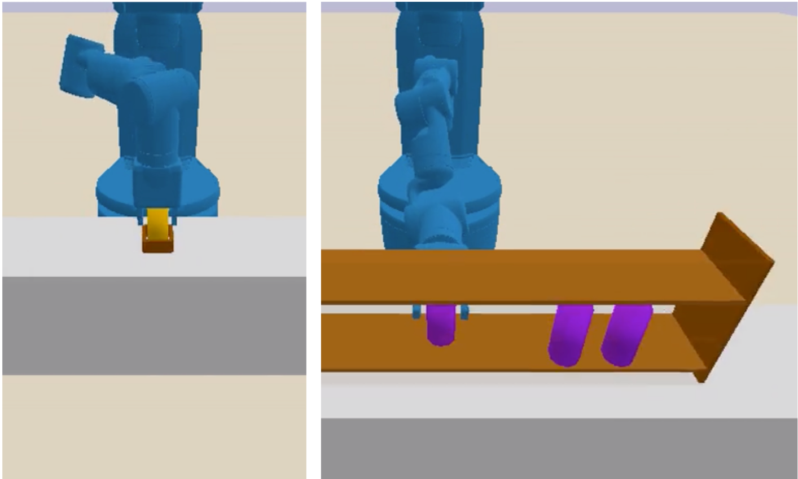
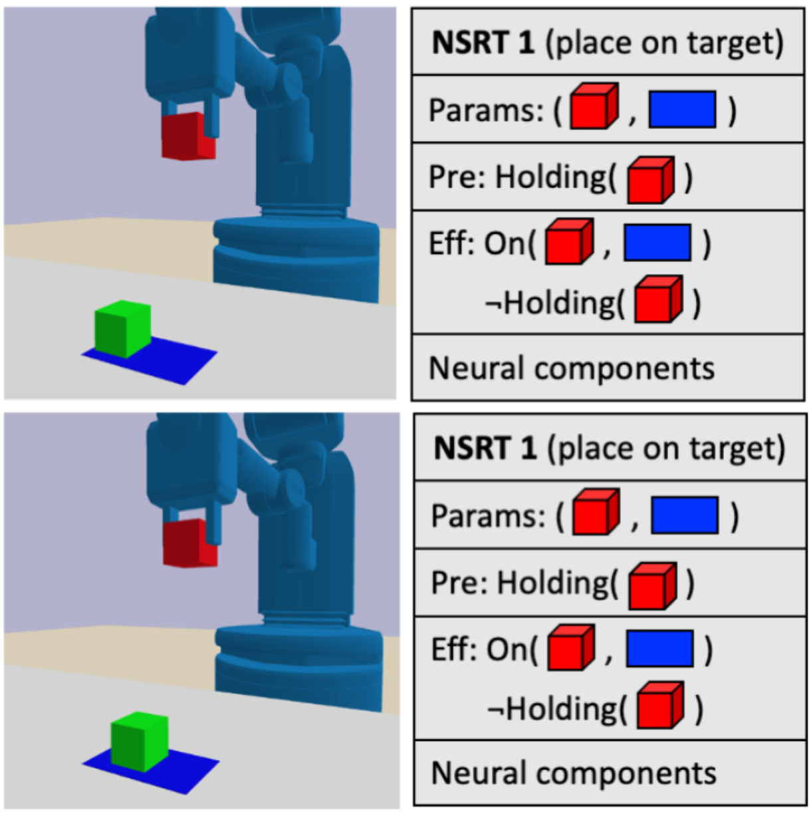

Overcoming the Pitfalls of Prediction Error in Operator Learning for Bilevel Planning
Abstract
Bilevel planning, in which a high-level search over an abstraction of an environment is used to guide low-level decision-making, is an effective approach to solving long-horizon tasks in continuous state and action spaces. Recent work has shown how to enable such bilevel planning by learning action and transition model abstractions in the form of symbolic operators and neural samplers. In this work, we show that existing symbolic operator learning approaches fall short in many natural environments where agent actions tend to cause a large number of irrelevant propositions to change. This is primarily because they attempt to learn operators that optimize the prediction error with respect to observed changes in the propositions. To overcome this issue, we propose to learn operators that only model changes necessary for abstract planning to achieve the specified goal. Experimentally, we show that our approach learns operators that lead to efficient planning across 10 different hybrid robotics domains, including 4 from the challenging BEHAVIOR-100 benchmark, with generalization to novel initial states, goals, and objects.
Related Resources
Check out a list of our related papers that learn the components necessary to perform bilevel planning/task and motion planning from demonstrations.

We propose a bottom-up relational approach for learning operators for task and motion planning. Our approach can be seen as a "model-based" learning approach to TAMP. We compare with several model-free baselines.

We learn neuro-symbolic and relational state and action abstractions from demonstrations. The abstractions are explicitly optimized for effective and efficient bilevel planning.

We propose Neuro-Symbolic Relational Transition Models (NSRTs), a novel class of transition models that are data-efficient to learn, compatible with powerful robotic task and motion planning methods, and generalizable over objects.